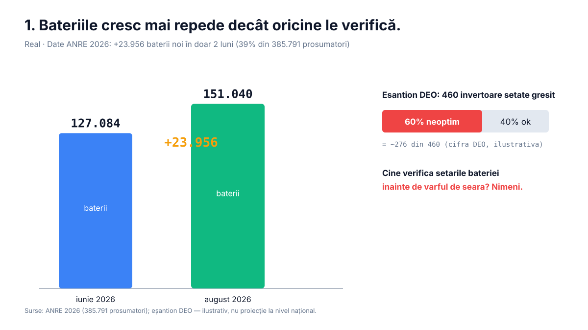
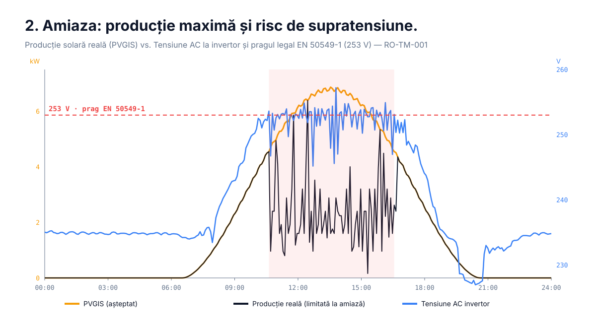
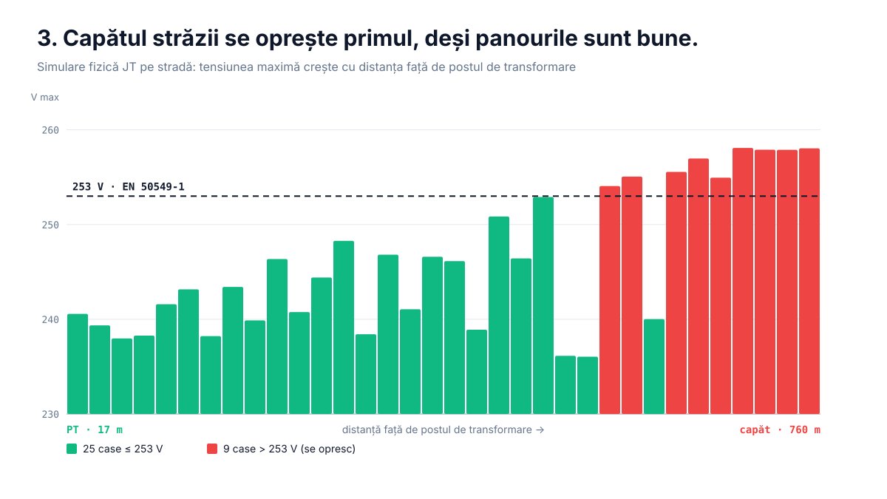
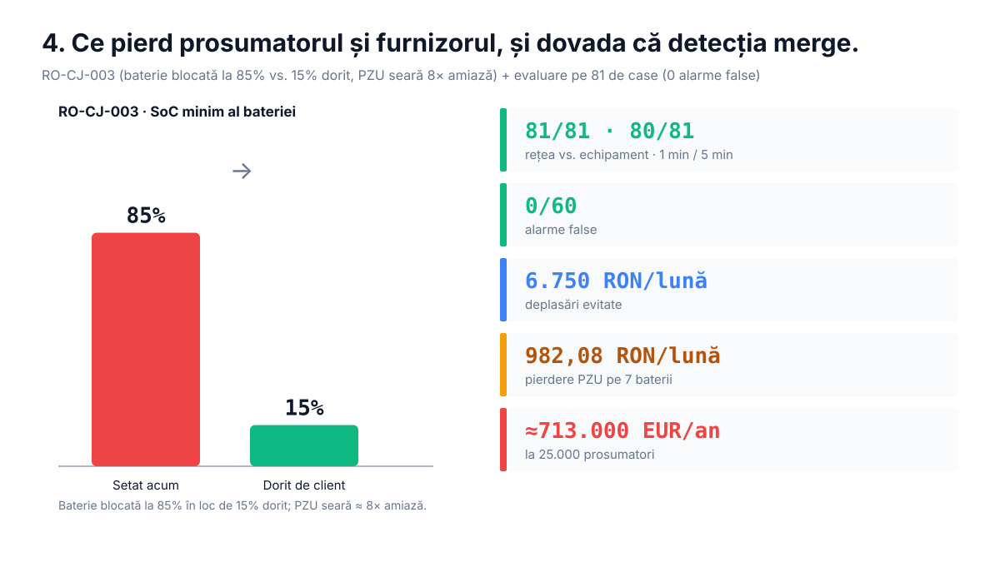

+23.956 baterii în 2 luni

60% din 460 invertoare DEO setate greșit

253 V prag EN 50549-1

81/81 scenarii · 0 alarme false
SunProof
+23.956 baterii în 2 luni · 60% din 460 invertoare DEO setate greșit · 253 V prag EN 50549-1 · 81/81 scenarii · 0 alarme false · ≈713.000 EUR/an la 25.000 prosumatori
↑ ↓ / ← → navigare